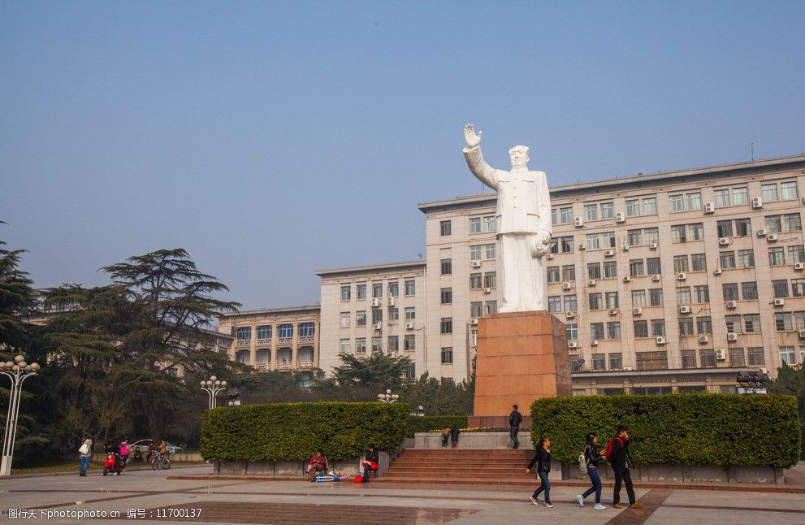
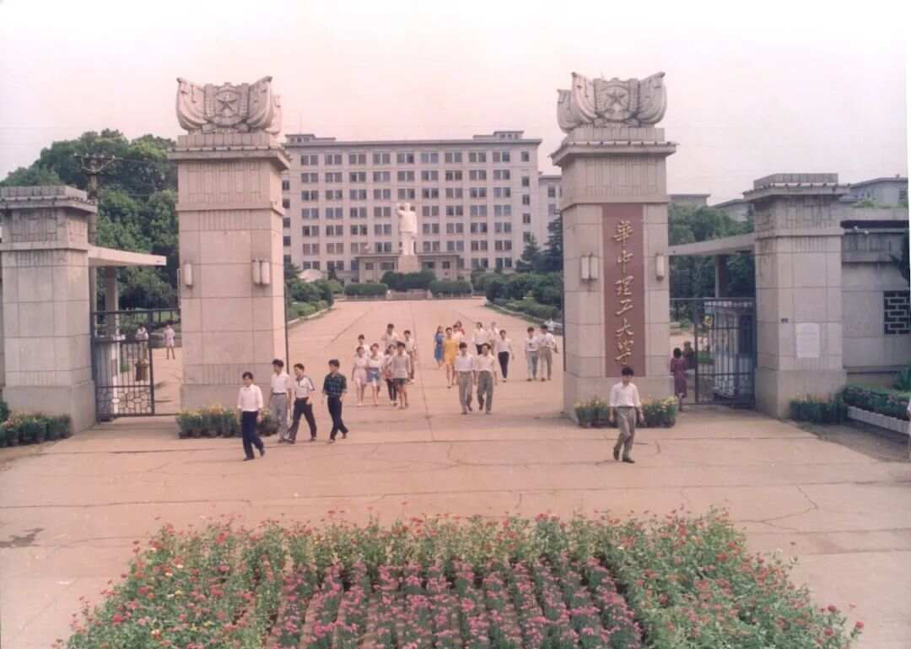
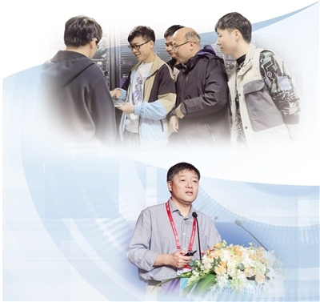
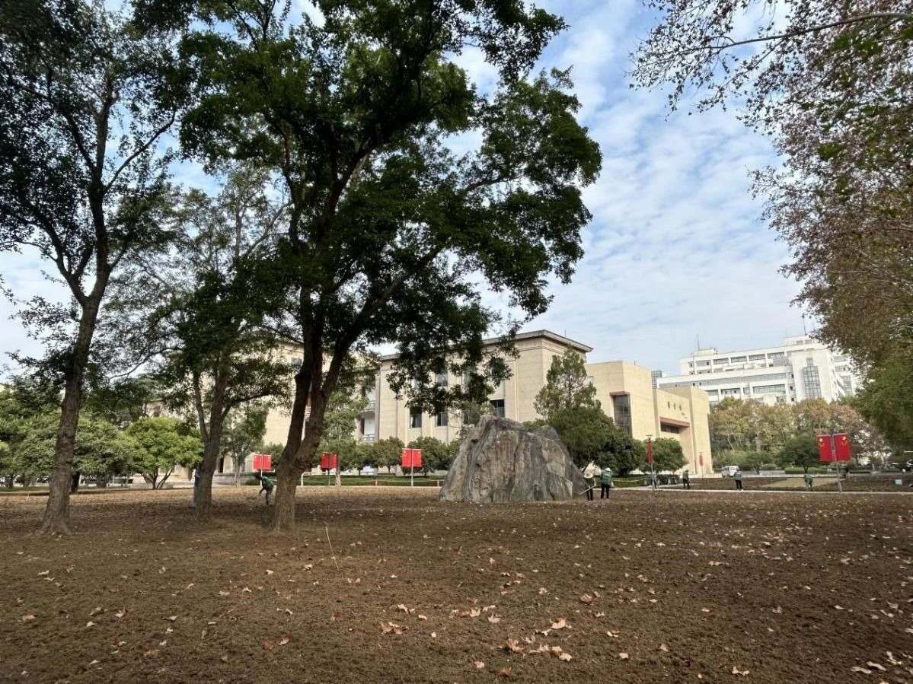

学校简介
华中科技大学(Huazhong University of Science and Technology,简称HUST)是中华人民共和国教育部直属的综合性全国重点大学,是国家“双一流”、“985工程”、“211工程”重点建设高校。
学校位于湖北省武汉市,占地面积4000余亩,校园环境优美,是求知治学的理想园地。
历史沿革
华中科技大学的历史可以追溯到1952年;当时由原武汉城市建设学院、武汉测量制图学院、湖北工学院等院校合并组建而成。
经过60多年的发展,学校已经成为一所以工为主，理、工、医、文、管、法等多学科协调发展的综合性大学。
学术研究
学校拥有一支高水平的师资队伍，其中包括多位中国科学院院士和中国工程院院士。
学校在多个学科领域取得了世界领先的科研成果，特别是在光电信息、智能制造、新材料、新能源等方向上具有显著优势。
校园生活
华中科技大学注重学生的全面发展，提供了丰富的校园文化活动和体育设施。学校鼓励学生参与社会实践和创新创业，为学生提供了广阔的发展平台。